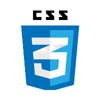

HTML adalah singkatan dari Hypertext Markup Language, dan merupakan bahasa markup standar yang digunakan untuk membuat halaman web. HTML digunakan untuk memberikan struktur dan konten ke dalam sebuah halaman web, seperti teks, gambar, video, tautan, dan elemen lainnya yang ditampilkan di browser.

CSS adalah singkatan dari Cascading Style Sheets, sebuah bahasa yang digunakan untuk mengatur tampilan atau gaya dari halaman web yang dibuat dengan HTML atau XML. CSS menjelaskan bagaimana elemen-elemen pada halaman web harus ditampilkan di layar, di atas kertas, dalam ucapan, atau di media lainnya.
JavaScript adalah bahasa pemrograman tingkat tinggi yang sangat umum digunakan untuk membuat halaman web interaktif dan dinamis. Bahasa ini memungkinkan pengembang untuk menambahkan berbagai fitur seperti animasi, kontrol formulir, dan manipulasi konten HTML/CSS.
Simak video singkat berikut untuk pemahaman lebih baik.